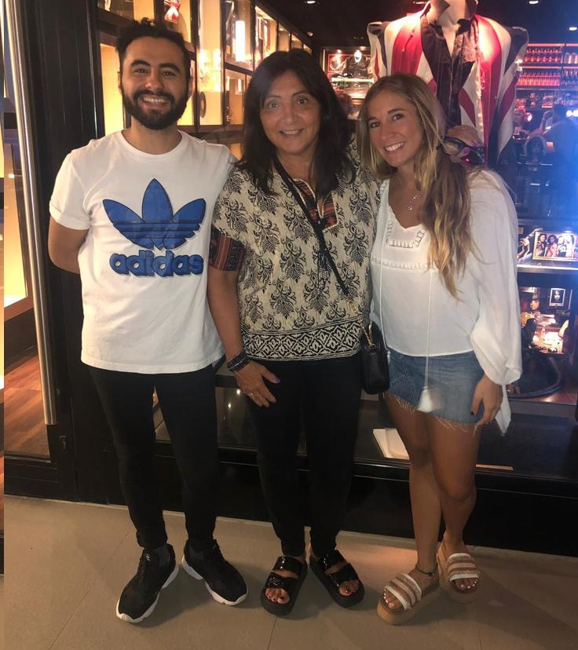

Mis hijos, mi orgullo
Como mamá estoy orgullosa de Luis y Martina De Robertis, ambos profesionales y sobretodo buenas personas.
Mis hijos son el motor de mis ambiciones, quiero seguir demostrándoles dónde los puede llevar el esfuerzo y la dedicación.
Es un honor verlos seguir sus pasiones: mi hijo Luis es periodista y músico, y mi hija Martina egresada de Letras, estudió en USA becada y actualmente vive en Boston.
Siempre les transmití que una carrera debe hacerlos felices y que es un privilegio poder dedicarse a lo que a uno le apasiona.
Trato siempre de continuar aprendiendo, trabajando en la actualización constante y disfrutando de la los avances de la tecnología. Amo lo que hago.